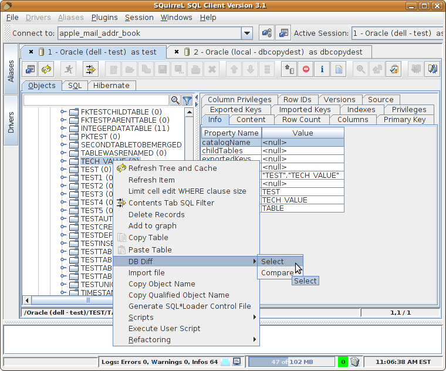

DBDiff Plugin
Author
Introduction
The DBDiff plugin adds the ability to compare tables between
sessions in the SQuirreL SQL Client.
Usage
To compare two tables for differences between two sessions you must first open two database
sessions. Then use the object tree to select the first table to be compared from one of the
sessions as shown in the figure below:

Next, use the object tree in the second session to select the second table to be compared as
shown in the following image:

If there are differences a dialog containing a chart of the differences will be displayed as
follows: